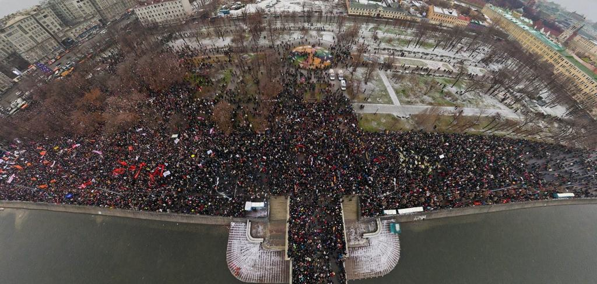
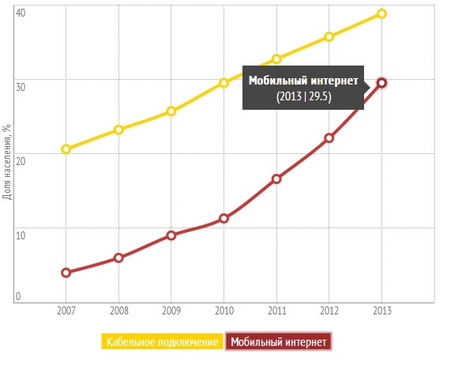
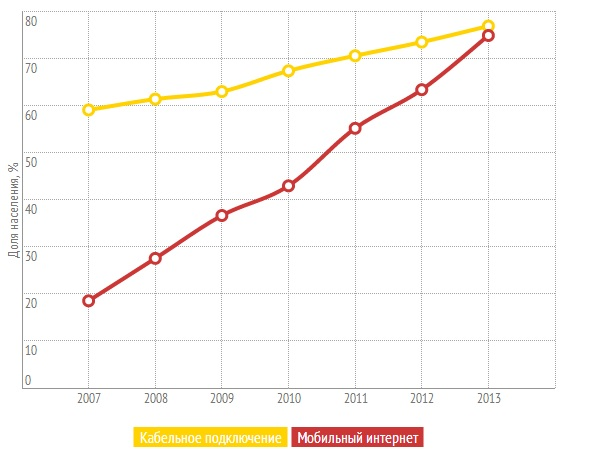
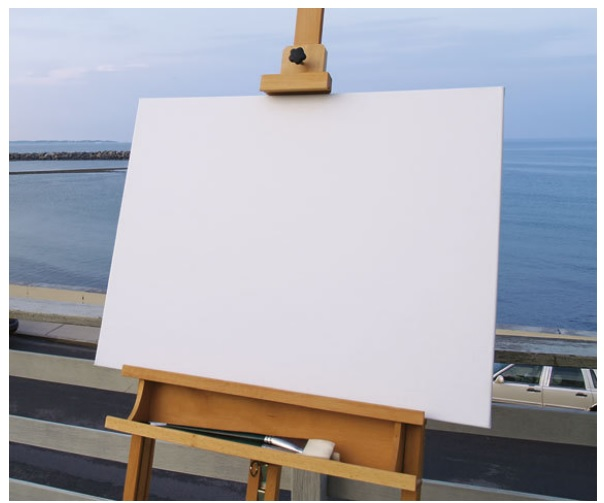
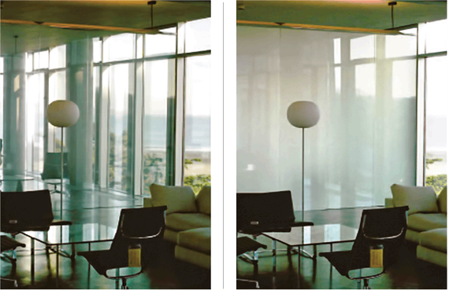

2,1 млрд людей користуються інтернетом з мобільних пристроїв.

Згідно Звіту Міжнародного Союзу Електрозв'язку ООН за 2013 рік.
Частка користувачів інтернету в світі

Частка користувачів інтернету в розвинутих країнах

Для чого втрачати таку велику кількість користувачів?
Давайте верстати для мобільних пристроїв також!
Що для цього потрібно?
Навіть пусте полотно створює обмеження для роботи художника

Мережа - це гнучкість
Архітектура, що пристосовується

Адаптивний веб-дизайн (Responsive Web Design)
‐ дизайн веб-сторінок, що забезпечує відмінне відображення сайту на
різноманітних пристроях, підключених до інтернету, і динамічно
підлаштовується
під задані розміри вікна.
Фіксовані макети - px
Резинові макети - %
Адаптивні макети - px + media-queries
Responsive макети - % + media-queries
Інгредієнти
Гнучкий макет на основі сітки.
Гнучкі зображення.
Медіазапити (media queries).
Гнучкий макет на основі сітки.
Гнучкі шрифти.
Гнучкий контент.
Гнучкі поля і відступи.
Гнучкі зображення.
background-size: % %;
width: %;
max-width: %;
W3C
By using media queries, presentations can be tailored to a specific range of output devices without changing the content itself.
Медіазапит складається з
медіа типу
щонайменше з одного виразу, що обмежує область видимості CSS